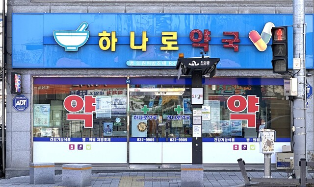
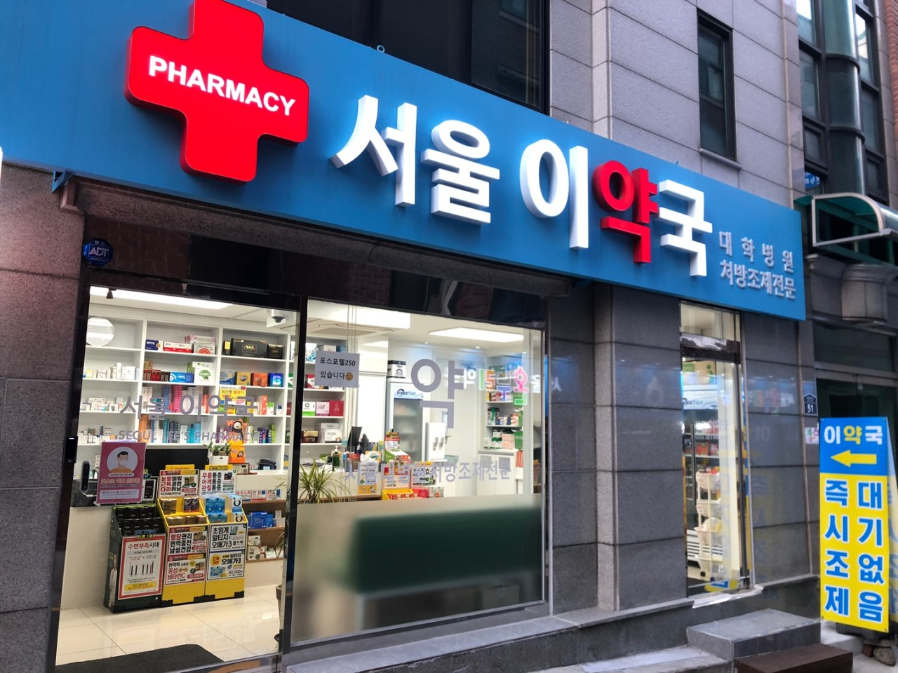

강약중강약국 · 가변 점포
간판 중앙에 강약중강약국, 왼쪽에 십자가와 PHARMACY, 오른쪽에 처방조제 안내를 배치했습니다. 이름 좌우 간격은 28cm로 유지합니다. 넓어지면 양끝 여백이 늘어나고, 좁은 간판에서는 이름 폭을 줄여 간격을 확보합니다. 본체에는 앞쪽 소품이 없으며, 별도 백과 에셋을 배치 규칙으로 조립합니다. 상층 창문은 포함하지 않습니다.
투명 박스는 실내 밝기의 적용 범위입니다. 벽·가구의 간접광을 고르게 만드는 표현이며 실제 광선 반사 계산은 아닙니다. 외부 그림자를 새로 만들지는 않습니다.
모델을 불러오는 중입니다.
백과 제작본
외관 레퍼런스 · 정면 기준

실내·간판 깊이 참고

추가로 찾은 약국 내부 레퍼런스
판매 진열과 약사 작업 수납을 구분하고, 낮은 매대 너머로 접수대와 뒤쪽 약장이 보이는 구성을 적용했습니다. 아래 사진은 참고용이며 모델 텍스처에 사용하지 않습니다.


현재 제작본은 소형 점포 예시입니다. 큰 약국의 가구 수를 그대로 복제하지 않고, 접수·조제·판매·대기 영역의 관계를 참고합니다.
배치 결과
양옆은 판매 진열장, 뒤쪽은 접수대와 직원용 약장으로 구분했습니다. 가구 한 개당 박스 1~3개를 사용하고 상품·서랍·선반은 텍스처입니다. 폭이 좁으면 대기 의자를 생략하며 접수대 뒤 직원 통로는 0.75m를 확보합니다. 중앙 출입문 폭은 1.65m로 유지합니다. 첫 사진의 신호등·기둥·볼라드는 거리 시설이므로 제외했습니다. 외부 소품과 내부 구성은 두 번째 사진을 참고한 조립 예시입니다. 유리 인쇄물은 가상의 안내이며 내부 가구와 마감은 업종에 따른 예시입니다. 치수는 사진 비례 추정입니다. 그림체는 단색 면과 단순한 패턴으로 유지합니다.
조립 미리보기용 1종입니다. 에셋 백과 통합본이며 실제 동네 자동 배치는 미연결입니다.
조사 자료: 천장고 3m 국내 약국 시공 사례 · 약국 가구와 카운터 사례